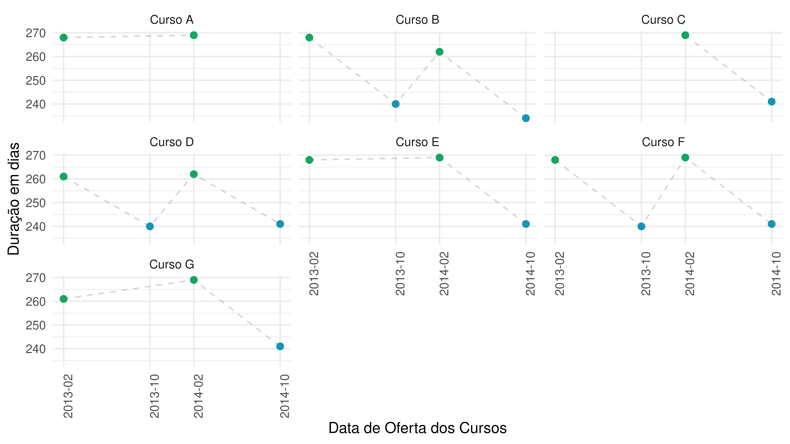
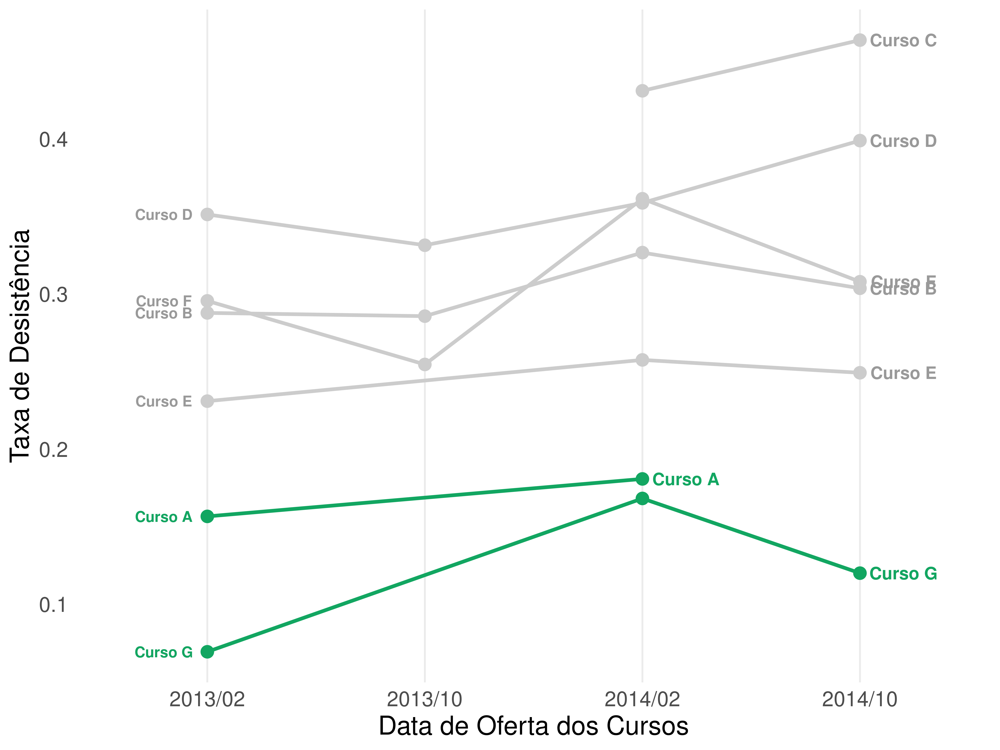
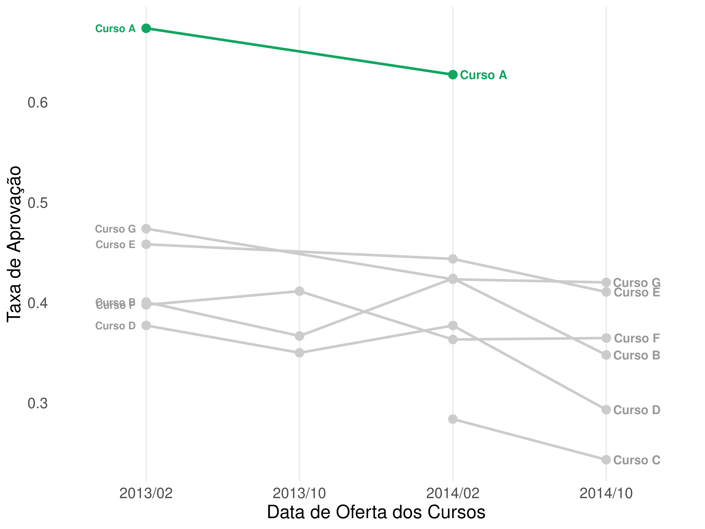
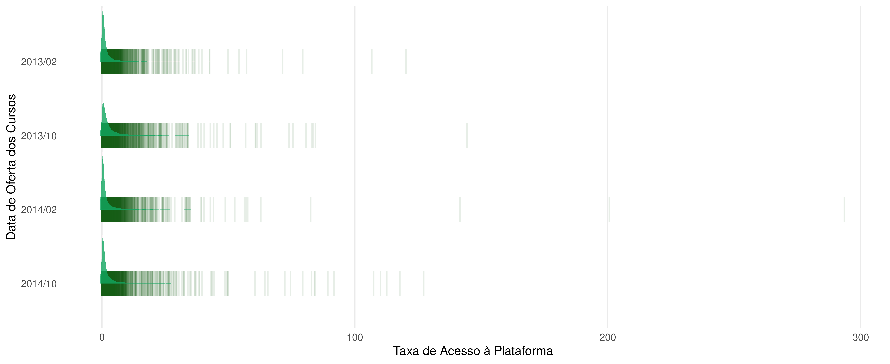
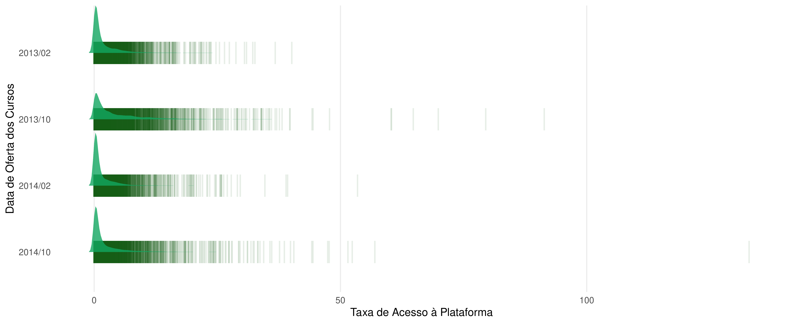

Etapa 1
Como dito anteriormente, nesta etapa você encontra a análise exploratório de dados (EDA).
Libs
library(tidyverse)
library(data.table)
library(tidytable)
library(data.table)
library(lubridate)
library(tidytext)
library(ggridges)
library(sf)
library(geofacet)
library(rlang)
library(plotly)Paleta de cores utilizadas na análise
# Paleta de cores utilizadas ao longo da análise
pallete_disc <- c("#12A661", "#1495B3", "#A67B24", "#482159",
"#D90D5B", "#165914", "#A61F0C", "#243B40",
"#165F66", "#1CA62D", "#A6341B")
pallete_2 <- c("#012623", "#038C73", "#1BA673", "#04BF68", "#04D960")
pallete_3 <- c("#D91A25", "#8C0A11", "#038C73", "#D9831A", "#8C520A")
pallete_4 <- c("#014034", "#1AD9B6", "#038C73", "#401200", "#8C2903")Data
# Os datasets utilizados estão separados em 3 categorias
# Ofertas dos cursos: Provas, Período de oferta e recursos online
assessments <- read_csv("data/assessments.csv")##
## ── Column specification ──────────────────────────────────────────────
## cols(
## code_module = col_character(),
## code_presentation = col_character(),
## id_assessment = col_double(),
## assessment_type = col_character(),
## date = col_double(),
## weight = col_double()
## )##
## ── Column specification ──────────────────────────────────────────────
## cols(
## code_module = col_character(),
## code_presentation = col_character(),
## module_presentation_length = col_double()
## )##
## ── Column specification ──────────────────────────────────────────────
## cols(
## id_site = col_double(),
## code_module = col_character(),
## code_presentation = col_character(),
## activity_type = col_character(),
## week_from = col_double(),
## week_to = col_double()
## )##
## ── Column specification ──────────────────────────────────────────────
## cols(
## code_module = col_character(),
## code_presentation = col_character(),
## id_student = col_double(),
## gender = col_character(),
## region = col_character(),
## highest_education = col_character(),
## imd_band = col_character(),
## age_band = col_character(),
## num_of_prev_attempts = col_double(),
## studied_credits = col_double(),
## disability = col_character(),
## final_result = col_character()
## )# Dados sobre interação dos estudantes com ambiente online
student_registration <- read_csv("data/studentRegistration.csv")##
## ── Column specification ──────────────────────────────────────────────
## cols(
## code_module = col_character(),
## code_presentation = col_character(),
## id_student = col_double(),
## date_registration = col_double(),
## date_unregistration = col_double()
## )##
## ── Column specification ──────────────────────────────────────────────
## cols(
## id_assessment = col_double(),
## id_student = col_double(),
## date_submitted = col_double(),
## is_banked = col_double(),
## score = col_double()
## )EDA
Oferta e Duração dos Cursos
Observou-se que sempre que um curso é ofertado no primeiro período do ano ele possui menor carga horária total (em dias), comparado ao segundo período.
#class: animated slideInRight fadeOutLeft, center
# convertendo em datas
courses_v1_tbl <- courses %>%
mutate(presentation_date = case_when(code_presentation == "2013J" ~ "2013/02/01",
code_presentation == "2013B" ~ "2013/10/01",
code_presentation == "2014J" ~ "2014/02/01",
TRUE ~ "2014/10/01"),
presentation_date = as.Date(presentation_date, tryFormats = c("%Y/%m/%d")))
# Visualização
courses_v1_tbl %>%
mutate(code_module = factor(code_module,
levels = c("AAA", "BBB",
"CCC", "DDD",
"EEE", "FFF",
"GGG"),
labels = c("Curso A", "Curso B",
"Curso C", "Curso D",
"Curso E", "Curso F",
"Curso G"))) %>%
ggplot(aes(x = presentation_date,
y = module_presentation_length,
group = code_module,
color = module_presentation_length < 250)) +
geom_line(color = "gray60",
alpha = .4,
linetype = 2) +
geom_point(size = 2,
show.legend = FALSE) +
scale_color_manual(values = pallete_disc) +
scale_x_date(breaks = as.Date(c("2013-02-01", "2013-10-01", "2014-02-01", "2014-10-01")),
minor_breaks = as.Date(c("2013-02-01", "2013-10-01",
"2014-02-01", "2014-10-01")),
date_labels = "%Y-%m") +
facet_wrap(~code_module) +
labs(x = "Data de Oferta dos Cursos",
y = "Duração em dias") +
theme_minimal() +
theme(axis.text.x = element_text(angle = 90, hjust = 1))
Perfomance vs Duração
Mesmo com uma redução considerável na carga horária dos cursos (30 a 40 dias), no geral a performance dos estudantes não sofreu nenhuma mudança significativa. Porém, observamos uma queda de mais de 12% quando olhamos para o Curso B, no período de 2014/02.
# convertendo em datas
assessments_v2_tbl <- assessments %>%
mutate(presentation_date = case_when(code_presentation == "2013J" ~ "2013/02/01",
code_presentation == "2013B" ~ "2013/10/01",
code_presentation == "2014J" ~ "2014/02/01",
TRUE ~ "2014/10/01"),
presentation_date = as.Date(presentation_date, tryFormats = c("%Y/%m/%d")),
assessment_date = presentation_date + date)
# Temos alguns valores nulos nessa tabela que é recorrente
# da falta da data do exame final de alguns cursos.
# Na documentação dos dados é dito que a data do exame final, quando NA,
# ocorre na última semana do período de duração do curso.
# Sendo assim vamos utilizar uma segunda tabela para encontrar essa data
# A tabela de curso tem a duração de cada curso
# realizando um join aqui, é possível obter a data do exame final dos missing values
assessments_v3_join_tbl <- assessments_v2_tbl %>%
left_join(courses, by = c("code_module", "code_presentation")) %>%
mutate(assessment_date = case_when(is.na(assessment_date) ~ (presentation_date + module_presentation_length - 6),
TRUE ~ assessment_date),
code_module = as.factor(code_module))
# Agora sim, nosso dataset assessments não possui valores missings
# Precisamos agora de algumas informações que estão em outra tabela
# Para isso, faremos um join
assem_demog_info_tbl <- student_assessment %>%
left_join(student_info, by = "id_student") %>%
left_join(assessments_v3_join_tbl, by = "id_assessment")
# Selecionando colunas de interesse
assem_demog_info_v1_tbl <- assem_demog_info_tbl %>%
rename(code_module = code_module.x, code_presentation = code_presentation.x) %>%
select(-code_module.y, -code_presentation.y)
# Visualização
assem_demog_info_v1_tbl %>%
mutate(code_presentation = factor(code_presentation,
levels = c("2013J", "2013B", "2014J", "2014B"),
labels = c("2013/02", "2013/10", "2014/02", "2014/10"))) %>%
mutate(code_module = factor(code_module,
levels = c("AAA", "BBB",
"CCC", "DDD",
"EEE", "FFF",
"GGG"),
labels = c("Curso A", "Curso B",
"Curso C", "Curso D",
"Curso E", "Curso F",
"Curso G"))) %>%
group_by(code_presentation, code_module) %>%
summarise(avg = mean(score, na.rm = TRUE)) %>%
ungroup() %>%
ggplot(aes(x = code_presentation,
y = avg,
color = code_module == "Curso B",
group = code_module)) +
geom_line(show.legend = FALSE) +
scale_color_manual(values = c("gray70", "#12A661")) +
geom_point(size = 2, show.legend = FALSE) +
facet_wrap(~code_module) +
theme_minimal() +
labs(
x = "Data de oferta dos cursos",
y = "Média dos scores finais"
)## `summarise()` regrouping output by 'code_presentation' (override with `.groups` argument)
Material de consulta
A OU (Open University) oferece diversos materiais para auxiliar os estudantes. Com o tempo, houve aumento da quantidade de recursos assim como a adição de novos.
# conversão em data
vle_v1_tbl <- vle %>%
mutate(presentation_date = case_when(code_presentation == "2013J" ~ "2013/02/01",
code_presentation == "2013B" ~ "2013/10/01",
code_presentation == "2014J" ~ "2014/02/01",
TRUE ~ "2014/10/01"),
presentation_date = as.Date(presentation_date, tryFormats = c("%Y/%m/%d")))
vle_v2_grouped_tbl <- vle_v1_tbl %>%
group_by(code_module, presentation_date, activity_type) %>%
summarise(count = n()) %>%
ungroup()## `summarise()` regrouping output by 'code_module', 'presentation_date' (override with `.groups` argument)# temos mais de 20 formas de interação com a plataforma o que torna difícil a visualização
# vamos então exibir e selecionar as principais
vle_v3_grouped <- vle_v1_tbl %>%
mutate(year = year(presentation_date),
month = month(presentation_date)) %>%
select(-id_site, -code_module, -code_presentation, -week_from, -week_to, -presentation_date, -month) %>%
group_by(year, activity_type) %>%
summarise(count = n()) %>%
ungroup()## `summarise()` regrouping output by 'year' (override with `.groups` argument)inter <- vle_v3_grouped %>%
group_by(year) %>%
slice_max(activity_type, n = 10) %>%
ungroup() %>%
mutate(year = as_factor(year),
activity_type = tidytext::reorder_within(activity_type, count, year))
inter %>%
ggplot(aes(x = activity_type,
y = count,
fill = activity_type == "oucontent___2014")) +
geom_col(show.legend = FALSE) +
scale_fill_manual(values = c("gray70", "#12A661")) +
facet_wrap(~year, scales = "free_y") +
coord_flip(ylim = c(0, 1500)) +
scale_x_reordered() +
theme_minimal() +
labs(y = "Quantidade de Material Ofertado",
x = "Tipo de Material Disponível")
Material de consulta
## `summarise()` ungrouping output (override with `.groups` argument)Apesar do aumento na quantidade total de materiais ofertados ao longo do tempo: 2463 em 2013 e 3124 em 2014, esse comportamento não é linear quando analisamos curso a curso. E curiosamente, no curso B, no mesmo período que houve menos oferta de material (mais de 100 recursos a menos), é o período que observamos uma queda na média do score final dos estudantes.
## `summarise()` ungrouping output (override with `.groups` argument)tot_material_2013 <- tot_material[1]
tot_material_2014 <- tot_material[2]
# todo material disponível no ambiente online (virtual learning environment)
vle_v1_tbl %>%
group_by(code_presentation, code_module) %>%
summarise(count = n()) %>%
ungroup() %>%
mutate(code_presentation = factor(code_presentation,
levels = c("2013J", "2013B", "2014J", "2014B"),
labels = c("2013/02", "2013/10", "2014/02", "2014/10"))) %>%
mutate(code_module = factor(code_module,
levels = c("AAA", "BBB",
"CCC", "DDD",
"EEE", "FFF",
"GGG"),
labels = c("Curso A", "Curso B",
"Curso C", "Curso D",
"Curso E", "Curso F",
"Curso G"))) %>%
ggplot(aes(x = code_presentation,
y = count)) +
geom_segment( aes(x = code_presentation, xend = code_presentation, y=0, yend = count), color="grey") +
geom_point(size=4, aes(color = code_module == "Curso B"), show.legend = FALSE) +
scale_color_manual(values = c("gray70", "#12A661")) +
facet_wrap(~code_module) +
theme_minimal() +
theme(
panel.grid.major.x = element_blank(),
panel.border = element_blank(),
axis.ticks.x = element_blank()
) +
labs(
x = "Data de Oferta dos Cursos",
y = "Quantidade de Material Ofertado"
)## `summarise()` regrouping output by 'code_presentation' (override with `.groups` argument)
Período das Avaliações
Cada curso possui avaliações intermediárias (TMA) ao longo do período e avaliações finais (Exam) na última semana. Porém, um tipo de avaliação (CMA) não ocorre para todas as disciplinas e nem em todos períodos. Por ser uma avaliação assistida por computador, presume-se que não se aplica a todos os cursos.
# Período de avaliações
assessments_v3_join_tbl %>%
mutate(code_module = factor(code_module,
levels = c("AAA", "BBB",
"CCC", "DDD",
"EEE", "FFF",
"GGG"),
labels = c("Curso A", "Curso B",
"Curso C", "Curso D",
"Curso E", "Curso F",
"Curso G"))) %>%
ggplot(aes(x = assessment_date,
y = fct_rev(code_module),
fill = assessment_type)) +
geom_tile() +
facet_wrap(~presentation_date, scales = "free") +
scale_x_date(date_breaks = "1 month", date_labels = "%b") +
scale_fill_manual(values = c("#A67B24", "#8F1F17", "#12A661")) +
labs(
x = "Data da Avaliação",
y = "",
fill = "Tipo de Avaliação"
) +
theme_minimal() +
theme(panel.grid.major.x = element_blank()) 
Estudantes
Taxa de Reprovação
Aqui observa-se um padrão interessante em relação a taxa de reprovação nos cursos. Apesar de vermos que a média de performance permanece praticamente sem alteração ao longo dos períodos (slide 5), a taxa de reprovação costuma ser um pouco maior nos períodos mais curtos (considerando os cursos que foram ofertados mais de 3 vezes).
# taxa de reprovação
student_prop <- student_info %>%
mutate(code_presentation = factor(code_presentation,
levels = c("2013J", "2013B", "2014J", "2014B"))) %>%
group_by(code_presentation, code_module) %>%
summarise(count = n()) %>%
ungroup()## `summarise()` regrouping output by 'code_presentation' (override with `.groups` argument)student_prop_2 <- student_info %>%
filter(final_result == "Fail") %>%
mutate(code_presentation = factor(code_presentation,
levels = c("2013J", "2013B", "2014J", "2014B"))) %>%
group_by(code_presentation,code_module) %>%
summarise(count_2 = n()) %>%
ungroup() %>%
select(count_2)## `summarise()` regrouping output by 'code_presentation' (override with `.groups` argument)student_fail_ratio <- bind_cols(student_prop, student_prop_2) %>%
mutate(prop = count_2/count) %>%
select(code_presentation, code_module, prop) %>%
mutate(code_module = factor(code_module,
levels = c("AAA", "BBB",
"CCC", "DDD",
"EEE", "FFF",
"GGG"),
labels = c("Curso A", "Curso B",
"Curso C", "Curso D",
"Curso E", "Curso F",
"Curso G"))) %>%
mutate(code_presentation = factor(code_presentation,
levels = c("2013J", "2013B", "2014J", "2014B"),
labels = c("2013/02", "2013/10", "2014/02", "2014/10")))
student_fail_ratio %>%
filter(!code_module %in% c("Curso A", "Curso C")) %>%
ggplot(aes(x = code_presentation,
y = prop,
color = code_presentation %in% c("2013/10", "2014/10"),
group = code_module)) +
geom_line(size = 1, color = "gray80") +
geom_point(size = 3) +
geom_text(data = student_fail_ratio %>% filter(code_presentation == "2013/02",
code_module != "Curso A"),
aes(label = code_module, x = 0.8),
fontface = "bold",
size = 3,
color = "gray60") +
geom_text(data = student_fail_ratio %>% filter(code_presentation == "2014/10",
code_module != "Curso C"),
aes(label = code_module, x = 4.3),
color = "gray60",
size = 3.5,
fontface = "bold") +
ylim(0.15, 0.32) +
scale_color_manual(values = c("gray80", "#12A661")) +
theme_minimal() +
guides(color = FALSE) +
theme(panel.grid.major.y = element_blank(),
panel.grid.minor.y = element_blank(),
panel.grid.minor.x = element_blank()) +
labs(
x = "Data de Oferta dos Cursos",
y = "Taxa de reprovação"
)
Taxas de Desistência e Aprovação
Analisando as taxas de desitência e aprovação é observado que os cursos A e G apresentam as menores taxas de desistência. Além disso, o curso Curso A apresenta a maior taxa de aprovação, aproximadamente 7 a cada 10 estudantes são aprovados.
# taxa de desistência
student_prop_3 <- student_info %>%
filter(final_result == "Withdrawn") %>%
mutate(code_presentation = factor(code_presentation,
levels = c("2013J", "2013B", "2014J", "2014B"))) %>%
group_by(code_presentation,code_module) %>%
summarise(count_2 = n()) %>%
ungroup() %>%
select(count_2)## `summarise()` regrouping output by 'code_presentation' (override with `.groups` argument)student_withdrawn_ratio <- bind_cols(student_prop, student_prop_3) %>%
mutate(prop = count_2/count) %>%
select(code_presentation, code_module, prop) %>%
mutate(code_module = factor(code_module,
levels = c("AAA", "BBB",
"CCC", "DDD",
"EEE", "FFF",
"GGG"),
labels = c("Curso A", "Curso B",
"Curso C", "Curso D",
"Curso E", "Curso F",
"Curso G"))) %>%
mutate(code_presentation = factor(code_presentation,
levels = c("2013J", "2013B", "2014J", "2014B"),
labels = c("2013/02", "2013/10", "2014/02", "2014/10")))
student_withdrawn_ratio %>%
ggplot(aes(x = code_presentation,
y = prop,
color = code_module %in% c("Curso A", "Curso G"),
group = code_module)) +
geom_line(size = 1) +
geom_point(size = 3) +
geom_text(data = student_withdrawn_ratio %>% filter(code_presentation == "2013/02"), aes(label = code_module, x = 0.8), fontface = "bold", size = 3, color = "gray60") +
geom_text(data = student_withdrawn_ratio %>% filter(code_presentation == "2013/02",
code_module %in% c("Curso A", "Curso G")), aes(label = code_module, x = 0.8), fontface = "bold", size = 3, color = "#12A661") +
geom_text(data = student_withdrawn_ratio %>% filter(code_presentation == "2014/10"), aes(label = code_module, x = 4.2), color = "gray60", size = 3.5, fontface = "bold") +
geom_text(data = student_withdrawn_ratio %>% filter(code_presentation == "2014/10",
code_module == "Curso G"), aes(label = code_module, x = 4.2), color = "#12A661", size = 3.5, fontface = "bold") +
geom_text(data = student_withdrawn_ratio %>% filter(code_presentation == "2014/02",
code_module == "Curso A"), aes(label = code_module, x = 3.2), color = "#12A661", size = 3.5, fontface = "bold") +
scale_color_manual(values = c("gray80", "#12A661")) +
theme_minimal() +
guides(color = FALSE) +
theme(panel.grid.major.y = element_blank(),
panel.grid.minor.y = element_blank(),
panel.grid.minor.x = element_blank(),
text = element_text(size = 15)) +
labs(
x = "Data de Oferta dos Cursos",
y = "Taxa de Desistência"
)
# taxa de aprovados
student_prop_4 <- student_info %>%
filter(final_result == "Pass") %>%
mutate(code_presentation = factor(code_presentation,
levels = c("2013J", "2013B", "2014J", "2014B"))) %>%
group_by(code_presentation,code_module) %>%
summarise(count_2 = n()) %>%
ungroup() %>%
select(count_2)## `summarise()` regrouping output by 'code_presentation' (override with `.groups` argument)student_pass_ratio <- bind_cols(student_prop, student_prop_4) %>%
mutate(prop = count_2/count) %>%
select(code_presentation, code_module, prop) %>%
mutate(code_module = factor(code_module,
levels = c("AAA", "BBB",
"CCC", "DDD",
"EEE", "FFF",
"GGG"),
labels = c("Curso A", "Curso B",
"Curso C", "Curso D",
"Curso E", "Curso F",
"Curso G"))) %>%
mutate(code_presentation = factor(code_presentation,
levels = c("2013J", "2013B", "2014J", "2014B"),
labels = c("2013/02", "2013/10", "2014/02", "2014/10")))
student_pass_ratio %>%
ggplot(aes(x = code_presentation,
y = prop,
color = code_module == "Curso A",
group = code_module)) +
geom_line(size = 1) +
geom_point(size = 3) +
geom_text(data = student_pass_ratio %>% filter(code_presentation == "2013/02"), aes(label = code_module, x = 0.8), fontface = "bold", size = 3, color = "gray60") +
geom_text(data = student_pass_ratio %>% filter(code_presentation == "2013/02",
code_module == "Curso A"), aes(label = code_module, x = 0.8), fontface = "bold", size = 3, color = "#12A661") +
geom_text(data = student_pass_ratio %>% filter(code_presentation == "2014/10"), aes(label = code_module, x = 4.2), color = "gray60", size = 3.5, fontface = "bold") +
geom_text(data = student_pass_ratio %>% filter(code_presentation == "2014/02",
code_module == "Curso A"), aes(label = code_module, x = 3.2), color = "#12A661", size = 3.5, fontface = "bold") +
scale_color_manual(values = c("gray80", "#12A661")) +
theme_minimal() +
guides(color = FALSE) +
theme(panel.grid.major.y = element_blank(),
panel.grid.minor.y = element_blank(),
panel.grid.minor.x = element_blank(),
text = element_text(size = 15)) +
labs(
x = "Data de Oferta dos Cursos",
y = "Taxa de Aprovação"
)
Quantidade de Estudantes por Gênero
Os dados mostram uma população predominantemente feminina em 2 cursos específicos: Curso B e Curso G. Em todas os outros temos mais homens participando dos cursos. Tal aderência pode ter relação com características intrínsecas dos respectivos cursos.
## `summarise()` regrouping output by 'code_presentation', 'code_module' (override with `.groups` argument)
Distribuições dos Scores Finais
.left[Após ter visualizado no slide 5 a média dos scores finais, é interessante observar como foi a distribuição de notas ao longo do tempo e por curso.]
.left[O que observa-se é um comportamento diferenciado em 2 cursos (Curso B e Curso G). Ambos possuem um pico de estudantes com performance muito elevada (acima de 90 pontos).]
# perfil de destribuição dos scores
assem_demog_info_v1_fct_tbl <- assem_demog_info_v1_tbl %>%
mutate(code_module = factor(code_module,
levels = c("AAA", "BBB",
"CCC", "DDD",
"EEE", "FFF",
"GGG"),
labels = c("Curso A", "Curso B",
"Curso C", "Curso D",
"Curso E", "Curso F",
"Curso G"))) %>%
mutate(code_presentation = factor(code_presentation,
levels = c("2013J", "2013B", "2014J", "2014B"),
labels = c("2013/02", "2013/10", "2014/02", "2014/10")))
assem_demog_info_v1_fct_tbl %>%
ggplot(aes(x = score,
y = fct_rev(code_presentation),
fill = code_module %in% c("Curso B", "Curso G"))) +
geom_density_ridges(gradient_lwd = 1., size = .2) +
scale_fill_manual(values = c("gray90", "#12A661")) +
facet_wrap(~code_module) +
scale_x_continuous(expand = c(0, 0)) +
theme_minimal() +
theme(panel.grid.major.y = element_blank(),
panel.grid.minor.y = element_blank(),
panel.grid.minor.x = element_blank()) +
labs(
x = "Scores",
y = "Data de Oferta dos Cursos"
) +
guides(fill = FALSE)## Warning: Ignoring unknown parameters: gradient_lwd## Picking joint bandwidth of 2.58## Picking joint bandwidth of 2.59## Picking joint bandwidth of 2.61## Picking joint bandwidth of 2.98## Picking joint bandwidth of 3.1## Picking joint bandwidth of 1.87## Picking joint bandwidth of 3.16## Warning: Removed 227 rows containing non-finite values
## (stat_density_ridges).
Distribuições dos Scores Finais
Também é possível notar que todos os cursos mantém um perfil característico de distribuição dos scores ao longo do tempo. Tal fator nos leva a acreditar que existe uma manuntenção da forma como os cursos vem sendo trabalhados e também uma manuntenção do perfil de aluno que normalmente opta por cada curso.
# perfil de destribuição dos scores
assem_demog_info_v1_fct_tbl <- assem_demog_info_v1_tbl %>%
mutate(code_module = factor(code_module,
levels = c("AAA", "BBB",
"CCC", "DDD",
"EEE", "FFF",
"GGG"),
labels = c("Curso A", "Curso B",
"Curso C", "Curso D",
"Curso E", "Curso F",
"Curso G"))) %>%
mutate(code_presentation = factor(code_presentation,
levels = c("2013J", "2013B", "2014J", "2014B"),
labels = c("2013/02", "2013/10", "2014/02", "2014/10")))
assem_demog_info_v1_fct_tbl %>%
ggplot(aes(x = score,
y = fct_rev(code_presentation),
fill = stat(x))) +
geom_density_ridges_gradient(gradient_lwd = 1., size = .2) +
facet_wrap(~code_module) +
scale_x_continuous(expand = c(0, 0)) +
scale_fill_gradient(high = "#18593B", low = "#12A661") +
theme_minimal() +
theme(panel.grid.major.y = element_blank(),
panel.grid.minor.y = element_blank(),
panel.grid.minor.x = element_blank()) +
labs(
x = "Scores",
y = "Data de Oferta dos Cursos"
) +
guides(fill = FALSE)## Picking joint bandwidth of 2.58## Picking joint bandwidth of 2.59## Picking joint bandwidth of 2.61## Picking joint bandwidth of 2.98## Picking joint bandwidth of 3.1## Picking joint bandwidth of 1.87## Picking joint bandwidth of 3.16
Distribuição da Taxa de Acesso à Plataforma
Como a plataforma online da OU oferece grande quantidade de materiais, e toda interação online é registrada no banco de dados, pode ser útil observar se existe diferença entre os estudantes de alto desempenho (High), apresentado no gráfico abaixo, e os demais.
clicks_students_period <- student_vle %>%
group_by(code_presentation, id_student) %>%
summarise(clicks = sum(sum_click)) %>%
ungroup()## `summarise()` regrouping output by 'code_presentation' (override with `.groups` argument)# data about the highest scores students
# Este procedimento usa muita memória, então eu salvei o csv final
# resultado desse procedimento.
prop_join <- function(high_score_students) {
student_vle_interation <- high_score_students %>%
select(-id_assessment, -date_submitted, -is_banked, -num_of_prev_attempts, -studied_credits, -disability, -assessment_type, -assessment_date, -module_presentation_length) %>%
left_join(clicks_students_period, by = "id_student")
student_clicks <- student_vle_interation %>%
group_by(code_presentation.y, id_student) %>%
summarise(quantity = sum(clicks)) %>%
ungroup()
student_total_period <- student_vle_interation %>%
distinct(code_presentation.y, id_student) %>%
group_by(code_presentation.y) %>%
summarise(count = n()) %>%
ungroup() %>%
drop_na()
ratio_click_student <- student_clicks %>%
left_join(student_total_period, by = "code_presentation.y") %>%
mutate(prop = quantity / count) %>%
select(-quantity, -count)
remove(student_vle_interation, student_clicks, student_total_period)
return(ratio_click_student)
}
# high_score_students
high_score_students <- assem_demog_info_v1_tbl %>%
distinct(id_student, .keep_all = TRUE) %>%
filter(score > 90)
# median_score_students
median_score_students <- assem_demog_info_v1_tbl %>%
distinct(id_student, .keep_all = TRUE) %>%
filter(between(score, 50, 90))
# low_score_students
low_score_students <- assem_demog_info_v1_tbl %>%
distinct(id_student, .keep_all = TRUE) %>%
filter(between(score, 0, 50))
ratio_high <- prop_join(high_score_students)## `summarise()` regrouping output by 'code_presentation.y' (override with `.groups` argument)## `summarise()` ungrouping output (override with `.groups` argument)## `summarise()` regrouping output by 'code_presentation.y' (override with `.groups` argument)
## `summarise()` ungrouping output (override with `.groups` argument)## `summarise()` regrouping output by 'code_presentation.y' (override with `.groups` argument)
## `summarise()` ungrouping output (override with `.groups` argument)ratio_high_fct <- ratio_high %>%
mutate(code_presentation = factor(code_presentation.y,
levels = c("2013J", "2013B", "2014J", "2014B"),
labels = c("2013/02", "2013/10", "2014/02", "2014/10")))
ratio_medium_fct <- ratio_medium %>%
mutate(code_presentation = factor(code_presentation.y,
levels = c("2013J", "2013B", "2014J", "2014B"),
labels = c("2013/02", "2013/10", "2014/02", "2014/10")))
ratio_low_fct <- ratio_low %>%
mutate(code_presentation = factor(code_presentation.y,
levels = c("2013J", "2013B", "2014J", "2014B"),
labels = c("2013/02", "2013/10", "2014/02", "2014/10")))
ratio_high_fct %>%
drop_na() %>%
ggplot(aes(x = prop, y = fct_rev(code_presentation))) +
geom_point(shape = "|", size = 8, alpha = .1, color = "#165914") +
geom_density_ridges(scale = .8, alpha = .8, fill = "#12A661", color = FALSE) +
theme_minimal() +
theme(panel.grid.major.y = element_blank(),
panel.grid.minor.y = element_blank(),
panel.grid.minor.x = element_blank()) +
labs(
x = "Taxa de Acesso à Plataforma",
y = "Data de Oferta dos Cursos"
)## Picking joint bandwidth of 0.622
Distribuição da Taxa de Acesso à Plataforma
Abaixo estão as distribuições do acessso de estudantes que tiveram scores entre 50 e 90 (Medium). Observando o eixo da taxa de acesso à plataforma, vemos que a mesma é muito baixa quando comparada com os estudantes de alto desempenho.
ratio_medium_fct %>%
drop_na() %>%
ggplot(aes(x = prop, y = fct_rev(code_presentation))) +
geom_point(shape = "|", size = 8, alpha = .1, color = "#165914") +
geom_density_ridges(scale = .8, alpha = .8, fill = "#12A661", color = FALSE) +
theme_minimal() +
theme(panel.grid.major.y = element_blank(),
panel.grid.minor.y = element_blank(),
panel.grid.minor.x = element_blank()) +
labs(
x = "Taxa de Acesso à Plataforma",
y = "Data de Oferta dos Cursos"
)## Picking joint bandwidth of 0.0476Distribuição da Taxa de Acesso à Plataforma
Abaixo estão os estudantes que foram reprovados, pois tiveram um score menor que 50 (Low). Observa-se que mesmo sendo reprovados eles obtiveram uma taxa de acesso não tão distante dos estudantes de alto desempenho. O que leva acreditar que sua reprovação pode ser consequência de um outro fator.
ratio_low_fct %>%
drop_na() %>%
ggplot(aes(x = prop, y = fct_rev(code_presentation))) +
geom_point(shape = "|", size = 8, alpha = .1, color = "#165914") +
geom_density_ridges(scale = .8, alpha = .8, fill = "#12A661", color = FALSE) +
theme_minimal() +
theme(panel.grid.major.y = element_blank(),
panel.grid.minor.y = element_blank(),
panel.grid.minor.x = element_blank()) +
labs(
x = "Taxa de Acesso à Plataforma",
y = "Data de Oferta dos Cursos"
)## Picking joint bandwidth of 0.243Média da Taxa de Acesso à Plataforma
Após ter uma visão geral do comportamento do acesso à plataforma entre diferentes perfis de estudantes, fica claro ao ver as médias que quem mais acessa os recursos oferecidos pela OU são os estudantes de alto desempenho. Também é possível ver que nos períodos de menor carga horária tem-se um aumento na taxa de acesso.
# tabela com stats descritivas
desc_stats_low <- ratio_low %>%
mutate(group = "Low") %>%
group_by(code_presentation.y, group) %>%
summarise(avg = mean(prop, na.rm = TRUE),
sd = sd(prop, na.rm = TRUE),
med = median(prop, na.rm = TRUE)) %>%
ungroup()## `summarise()` regrouping output by 'code_presentation.y' (override with `.groups` argument)desc_stats_medium <- ratio_medium %>%
mutate(group = "Medium") %>%
group_by(code_presentation.y, group) %>%
summarise(avg = mean(prop, na.rm = TRUE),
sd = sd(prop, na.rm = TRUE),
med = median(prop, na.rm = TRUE)) %>%
ungroup()## `summarise()` regrouping output by 'code_presentation.y' (override with `.groups` argument)desc_stats_high <- ratio_high %>%
mutate(group = "High") %>%
group_by(code_presentation.y, group) %>%
summarise(avg = mean(prop, na.rm = TRUE),
sd = sd(prop, na.rm = TRUE),
med = median(prop, na.rm = TRUE)) %>%
ungroup()## `summarise()` regrouping output by 'code_presentation.y' (override with `.groups` argument)desc_stats <- bind_rows(desc_stats_low, desc_stats_high, desc_stats_medium) %>%
drop_na() %>%
mutate(code_presentation.y = factor(code_presentation.y,
levels = c("2013J", "2013B", "2014J", "2014B"),
labels = c("2013/02", "2013/10", "2014/02", "2014/10")))
desc_stats %>%
ggplot(aes(x = code_presentation.y,
y = avg,
color = group,
group = group)) +
geom_line(size = 2) +
geom_point(size = 4) +
geom_text(data = desc_stats %>% filter(code_presentation.y == "2013/02"), aes(label = group, x = 0.8), fontface = "bold", size = 4) +
geom_text(data = desc_stats %>% filter(code_presentation.y == "2014/10"), aes(label = group, x = 4.2), fontface = "bold", size = 4) +
scale_color_manual(values = c("#216125", "#529E36", "#ACE058")) +
theme_minimal() +
guides(color = FALSE) +
theme(panel.grid.major.y = element_blank(),
panel.grid.minor.y = element_blank(),
panel.grid.minor.x = element_blank()) +
labs(
x = "Data de Oferta dos Cursos",
y = "Média da Taxa de Acesso à Plataforma"
)
Perfil dos Acessos à Plataforma
No gráfico seguinte é visto o acesso à plataforma relacionado aos dados ao longo da duração do curso no eixo horizontal (em dias), e em conjunto com os cursos e o respectivo período.
# verificando período de acesso do low
student_click_w_date <- student_vle %>%
group_by(code_presentation, code_module, id_student, date) %>%
summarise(clicks = sum(sum_click, na.rm = TRUE)) %>%
ungroup()## `summarise()` regrouping output by 'code_presentation', 'code_module', 'id_student' (override with `.groups` argument)prop_period_join <- function (ratio_high_fct) {
access_period <- ratio_high_fct %>%
select(-prop, -code_presentation.y) %>%
left_join(student_click_w_date, by = "id_student")
access_period_clicks <- access_period %>%
mutate(date = as.factor(date)) %>%
group_by(code_presentation.y, code_module, date) %>%
summarise(total_clicks = sum(clicks, na.rm = TRUE)) %>%
ungroup() %>%
mutate(code_presentation.y = factor(code_presentation.y,
levels = c("2013J", "2013B", "2014J", "2014B"),
labels = c("2013/02", "2013/10", "2014/02", "2014/10"))) %>%
mutate(code_module = factor(code_module,
levels = c("AAA", "BBB",
"CCC", "DDD",
"EEE", "FFF",
"GGG"),
labels = c("Curso A", "Curso B",
"Curso C", "Curso D",
"Curso E", "Curso F",
"Curso G")))
}
period_access_high <- prop_period_join(ratio_high_fct)## `summarise()` regrouping output by 'code_presentation.y', 'code_module' (override with `.groups` argument)## `summarise()` regrouping output by 'code_presentation.y', 'code_module' (override with `.groups` argument)## `summarise()` regrouping output by 'code_presentation.y', 'code_module' (override with `.groups` argument)period_acess_geral <- bind_rows(period_access_low, period_access_medium, period_access_high)
g1 <- period_acess_geral %>%
drop_na() %>%
ggplot(aes(x = date,
y = total_clicks)) +
geom_col(alpha = .3) +
geom_smooth(data = period_acess_geral %>% drop_na() %>% mutate(date = as.numeric(date)),
mapping = aes(x = date, y = total_clicks),
span = .07,
size = .7,
se = FALSE,
color = "#12A661") +
scale_x_discrete(breaks = c(-10, 50, 100, 150, 200, 250, 295)) +
facet_grid(code_module ~ code_presentation.y, scales = "free_y") +
theme_minimal() +
guides(color = FALSE) +
theme(panel.grid.major.y = element_blank(),
panel.grid.minor.y = element_blank(),
panel.grid.minor.x = element_blank()) +
labs(
x = "Período de Duração do Curso (dias)",
y = "Quantidade de Registros de Acesso à Plataforma"
)
g1## `geom_smooth()` using method = 'loess' and formula 'y ~ x'
Perfil dos Acessos à Plataforma
Veja que a linha de tendência apresenta diferentes picos durante um determinado período. Esses picos são referentes aos períodos das avaliações, sugerindo que os estudantes acessam mais os recursos quando se aproxima das datas das avaliações.
## `geom_smooth()` using method = 'loess' and formula 'y ~ x'
Características por Região
Observa-se insights interessantes sobre a localização desses estudantes. No Sul do Reino Unido está localizado a maior parcela dos estudantes que estiveram matriculados na OU e em segundo lugar a Escócia.
Também nota-se que existe maior número de homens do que mulheres, aproximadamente 36% a mais.
Vemos que a maior fatia dos estudantes possuem entre 0 e 35 anos, e novamente o Sul e a Escócia concentra maior parcela.]
# alterando nomes das regiões pelo nome correto
assem_demog_info_v2_tbl <- assem_demog_info_v1_tbl %>%
mutate(region = case_when(region == "East Anglian Region" ~ "East of England",
region == "East Midlands Region" ~ "East Midlands (England)",
region == "Ireland" ~ "Northern Ireland",
region == "London Region" ~ "London",
region == "North Region" ~ "North East (England)",
region == "North Western Region" ~ "North West (England)",
region == "South East Region" ~ "South East (England)",
region == "South West Region" ~ "South West (England)",
region == "West Midlands Region" ~ "West Midlands (England)",
region == "Yorkshire Region" ~ "Yorkshire and The Humber",
TRUE ~ region)) %>%
filter(region != "South Region")
# Os dados consideram apenas um Sul em algumas categorizações
# Aqui iremos dividir em 50% para South East e 50% para South West
assem_demog_info_v3_south50_tbl <- assem_demog_info_v1_tbl %>%
filter(region == "South Region") %>%
slice_head(n = 10000) %>%
mutate(region = case_when(region == "South Region" ~ "South East (England)",
TRUE ~ region))
assem_demog_info_v3_south100_tbl <- assem_demog_info_v1_tbl %>%
filter(region == "South Region") %>%
slice_tail(n = 10883) %>%
mutate(region = case_when(region == "South Region" ~ "South West (England)",
TRUE ~ region))
# dataset a ser utilizado
assem_demog_info_v3_tbl <- bind_rows(assem_demog_info_v2_tbl, assem_demog_info_v3_south50_tbl, assem_demog_info_v3_south100_tbl) %>%
mutate(gender = factor(gender,
levels = c("F", "M"),
labels = c("Feminino", "Masculino"))) %>%
mutate(age_band = factor(age_band,
levels = c("0-35", "35-55", "55<="),
labels = c("0 à 35 anos",
"35 à 55 anos",
"maior que 55 anos")))
# para trabalhar com mapas, iremos utilizar um tipo de arquivo chamado shapefiles
# o mesmo pode ser encontrado na internet: LINK
uk_map <- read_sf("data/shapefile/NUTS_Level_1__January_2018__Boundaries-shp/NUTS_Level_1__January_2018__Boundaries.shp")
uk_map_filter_quantity_students <- assem_demog_info_v3_tbl %>%
count(region) %>%
inner_join(uk_map, by = c("region" = "nuts118nm"))
uk_map_filter_gender <- assem_demog_info_v3_tbl %>%
group_by(region, gender) %>%
summarise(n = n()) %>%
ungroup() %>%
inner_join(uk_map, by = c("region" = "nuts118nm"))## `summarise()` regrouping output by 'region' (override with `.groups` argument)plot_map_by_category <- function(data, var) {
# expressão não avaliada
var_exrp <- enquo(var)
# agrupando pela variável de interesse
uk_map_filter <- data %>%
group_by(region, !!var_exrp) %>%
summarise(n = n()) %>%
ungroup() %>%
inner_join(uk_map, by = c("region" = "nuts118nm"))
# retorna um objeto ggplot
ggplot() +
geom_sf(data = uk_map_filter, aes(geometry = geometry,
fill = n,
text = str_glue("{region}
{n} Estudantes")),
size = .4) +
facet_wrap(as.formula(paste("~", var_exrp))) +
scale_fill_gradient(high = "#12A661", low = "#F2F78F") +
theme_minimal() +
guides(fill = FALSE) +
theme(panel.grid = element_blank(),
axis.title.x = element_blank(),
axis.text.x = element_blank(),
axis.text.y = element_blank())
}
interactive_plot_gender <- assem_demog_info_v3_tbl %>%
plot_map_by_category(var = gender) %>%
plotly::ggplotly(tooltip = "text", width=500, height=300) %>%
style(hoveron = "text")## `summarise()` regrouping output by 'region' (override with `.groups` argument)## Warning: Ignoring unknown aesthetics: text## Warning: Using formula(x) is deprecated when x is a character vector of length > 1.
## Consider formula(paste(x, collapse = " ")) instead.interactive_plot_ageband <- assem_demog_info_v3_tbl %>%
plot_map_by_category(var = age_band) %>%
plotly::ggplotly(tooltip = "text", width=500, height=300) %>%
style(hoveron = "text")## `summarise()` regrouping output by 'region' (override with `.groups` argument)## Warning: Ignoring unknown aesthetics: text
## Warning: Using formula(x) is deprecated when x is a character vector of length > 1.
## Consider formula(paste(x, collapse = " ")) instead.Auxiliando na Tomada de Decisão!
Pode ser interessante um replanejamento dos cursos de menor duração, e assim tentar diminuir a taxa de reprovação nos respectivos períodos.
Alguns cursos precisam ser estudadas em mais detalhes:
- Cursos B e G: Entender quais fatores são mais determinantes para as mulheres optarem por esses cursos.
- Curso A: Avaliar quais parâmetros fazem este curso ter altas taxas de aprovação, e assim tentar replicar para outros cursos.]
Auxiliando na Tomada de Decisão!
Os dados mostram que existe maior acesso à plataforma por estudantes de alto desempenho. Sendo assim, pode ser importante o incentivo mais efetivo ao uso da plaforma online.
Os perfis de acesso à plataforma mostram picos de acesso ao longo de um determinado periodo e curso. Esses perfis podem ser importantes para o time de Data Science prever a demanda de acesso à plataforma, evitando assim quedas no servidor devido ao aumento tráfego.
Algumas ações de marketing podem ser importantes para promover avanço nos negócios:
Promover o curso em outras regiões do Reino Unido, além do Sul e da Escócia, pois esses concentram maior parte dos estudantes.
Promover os cursos para pessoas de faixa-etária acima dos 35 anos, assim como para o público feminino.